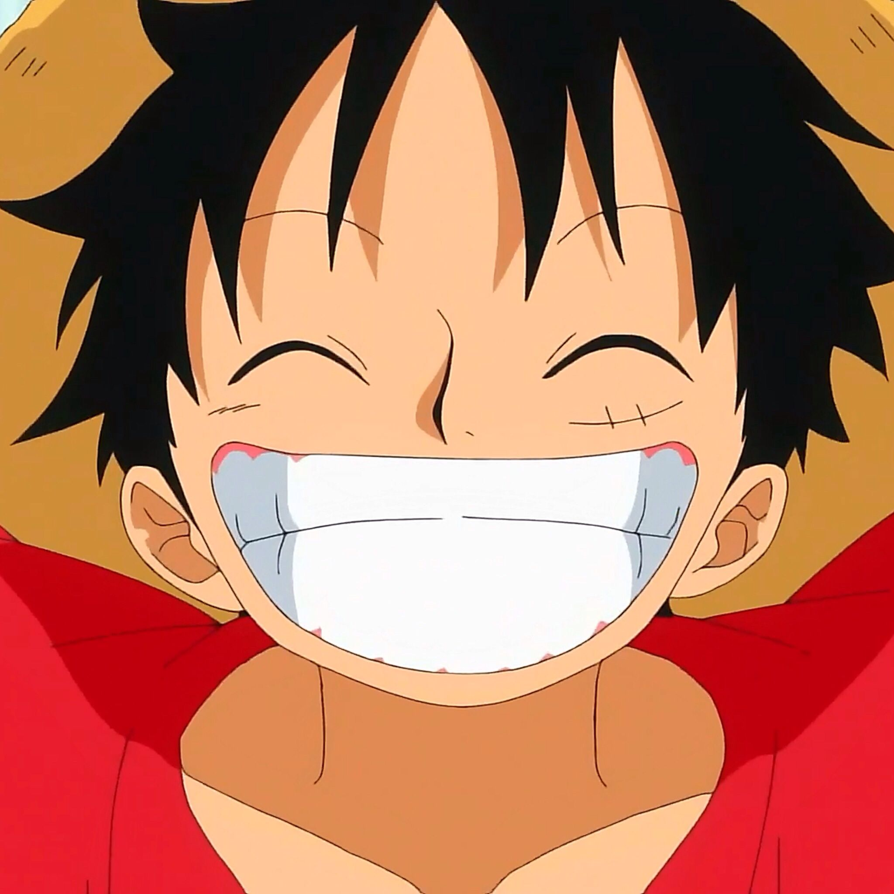

Today we will know my favorite members of the Straw Hats from One Piece! We will learn about them a little bit and answer why are they my favorite
| Image | Origin | Reasons |
|---|---|---|
| Zoro | Zoro came from Shimotsuki Village. The village he lived in was focused on the culture of swordsmanship, and he was trained by Koshira, the village's sword master. He had a dream to become the greatest swordsman in the world. He trains with his fellow collegue Kunia, a girl with the same dream as him, but doubts her dream due to her being a girl, but Zoro says that Kuina shouldn't doubt herself, man or woman, they can become the greatest swordsman, though one tragic accident happened and Kuina passed away. Due to her passing, Zoro promised her to fulfill their dream, and he keeps this promise forever. | The reason why Zoro is my #1 Favorite is becuase besides him being very cool, masculine, and nonchalant, Zoro is a very loyal person, to his crew and most importantly his promises. Just like Luffy, Zoro doesn't quit on his goals that easy. Also a cool thing about Zoro is that he uses 3 swords, 2 for his hands and 1 for his mouth. |
| Luffy  | Luffy used to live in a small village named Foosha Village. He has met great pirates such as future Yonko, Red-Haired Shanks. Red-Haired Shanks and the former King of Pirates Gold Roger are the people that inspired Luffy to become the greatest pirate in all of the seas, or "The King of Pirates." But as he travels the seas, he meets the future members of his crew, like his first mate, Zoro. |
The reason why Luffy is one of my favorites is because he has a certain drive to pursue his dreams no matter ridiculous or hard, he gets back up, pulls a smile, and continues on with his journey. He never gives up to pursue a goal. |
| Nami | Nami grew up in Cocoyasi village as was adopted and raised by a woman named Belle-Mere, a former Marine who resigned, and lives with her sister Nojiko. Nami was destined to be a navigator and a cartographer for her talent of navigating and drawing maps, but the downside of her is that she is a theif, but this is furthur explained in the story. As Arlong, a fishman (not fisherman), invades the island, and Nami seeks the mission of buying the village back by the jewels she steals, but then gets betrayed by Arlong, so Luffy and his crew destroys Arlong and his band of pirates. Her dream is to create a map of the Grand Line. | The reason why Nami is my favorite is because firstly she is a very gorgeous character with a very unique design, not only that but beside her habit of being a theif, her story says a lot about that, about her trying to save the town in justice for the village and her mother's death, though stealing is bad, in a situation like that, it was the only logical option present in her shoes. She is also a very caring person, especially to her crew. |
| Sanji | Sanji was born in royaly or superhuman assassins because his father is Judge Vinsmoke, the only problem was that since he isn't genetically modified like his siblings, he was seen inferior by his father, after his mother died, Sanji had to live for himself. As he works in the Vinsmoke Family Ship to be a cook, he meets Zeff, a former pirate, but the ship gets caught on a huge storm and was bestowed in accident. Sanji and Zeff get stranded on a cliff with such little food, but here's the twist, Zeff gives Sanji a small bag while Zeff gets a big bag. After Sanji finished the bag after 3 months of being stranded on a cliff, Sanji tries to threaten Zeff by giving him the big bag filled with "food", but as Sanji opens the bag, he realizes that the big bag was just treasure, and that Zeff sacrificed and ate his own leg in order to save Sanji, but why? Firstly he was a kid, lastly they both have the same dream of finding the All Blue. | The reason why Sanji is one of my favorite characters is because he brings the inner cook inside of me, his meals and art of culinary is amazing. It inspires me to expand my taste pallete and try cooking more. Sanji also has a very touching back story that inspires me to not really rely on people but myself, being independent and responsible. |
| Chopper | Chopper came from Drum Island and was born a normal reindeet, but one day he ate the Devil Fruit named Hito Hito no Mi, which gave him human-like abilities, he can transform into a human-reindeet hybrid sometimes and learned how to speak and think like a human, but since he was different, he was rejected by his own herd. He was taken by a Doctor named Hiluluk who told Chopper that he should continue living despite his abilities, he also taught him the importance of helping people. After Hiluluk died, he was taken by Dr. Kureha, a famous doctor on Drum Island, he taught Chopper about medicine. Chopper's dream is to create a cure for any disease. | Ok, this is obvious enough why I love him. Firstly his origin is very heartwarming, secondly he is VERY CUTE, including his voice actor doing an impresive job of voicing a cute tone. Lastly, his dream on creating a cure for any disease is a very marvelous dream, since it benefits a lot of people, the only thing I hope for Chopper is that he doesn't overprice his medicine. |
| # | Character's name |
|---|---|
| 1 | Luffy |
| 2 | Zoro |
| 3 | Nami |
| 4 | Usopp |
| 5 | Sanji |
| 6 | Tony Tony Chopper |
| 7 | Nico Robin |
| 8 | Franky |
| 9 | Brook |
| 10 | Jinbe |
Made by
{kind=link}
{kind=link}
{kind=link}
{kind=link}
{kind=link}